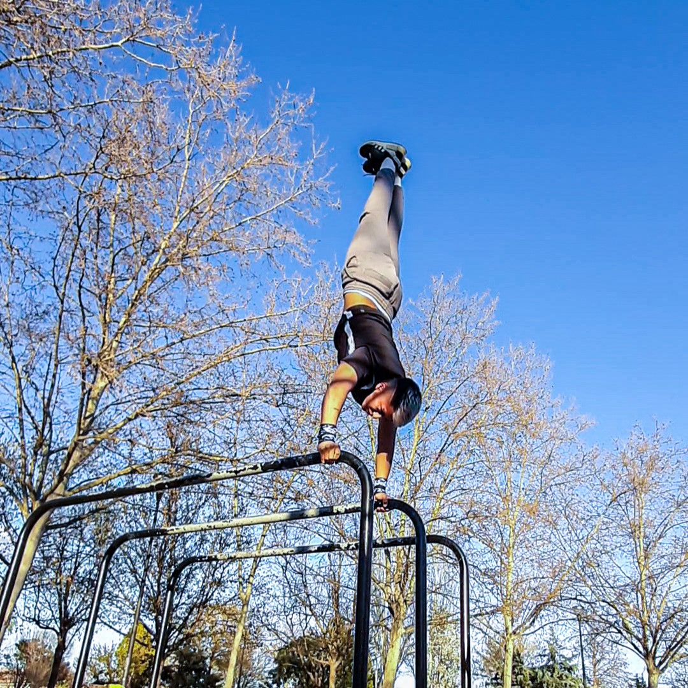

ERIK FABRICIO TIPAN RAMIREZ
INFORMÁTICO
CONTACTO
- +34 639 814 987
- erickmayka10@hotmail.com
- www.linkedin.com/Erik-Tipan
- www.instagram.com/erickfabriciotr
- Parla, Madrid, España
ESTUDIOS
2017 - 2019
F.P. Grado medio en Sistemas Microinformáticos y Redes
I.E.S Enrique Tierno Galván
IDIOMAS
Español  Inglés
Inglés 
Inglés
PERFIL
Soy un chico de 22 años con interés en el desarrollo web. Actualmente me encuentro formándome en dicha área de manera autodidacta.
Disciplinado y serio con el trabajo.
Con don de gentes y buen trato con el cliente al tener más de 3 años de experiencia como técnico de soporte (la mayor parte del tiempo telefónico).
EXPERIENCIA
2022 - 2023
FRACTALIA SYSTEMS S.L
TÉCNICO DE SOPORTE N1
Técnico de soporte para PYMES.
Implantación del servicio Dynamics 365 .
Reuniones con cliente para asesorarle dentro de la aplicacion.
Trabajo con herramienta de ticketing (Jira).
Implantación del servicio Dynamics 365 .
Reuniones con cliente para asesorarle dentro de la aplicacion.
Trabajo con herramienta de ticketing (Jira).
2019 - 2022
ACCENTURE (PROYECTO CESUS)
SOPORTE N1 PARA LA CONSEJERÍA DE SANIDAD DE LA C. DE MADRID
Técnico de soporte de las usuarios de la consejería de sanidad de la Comunidad de Madrid.
Resolviendo incidencias y solicitudes de los sistemas de información (aplicaciones corporativas de la consejería de sanidad), gestión de incidencias de equipos: impresoras, PCs, garantías.
Resolviendo incidencias y solicitudes de los sistemas de información (aplicaciones corporativas de la consejería de sanidad), gestión de incidencias de equipos: impresoras, PCs, garantías.
HABILIDADES
HTML CSS MAQUETACIÓN GRID FLEXBOXINTERESES
- Videojuegos
- Entrenamiento
- Cocina
- Filosofía